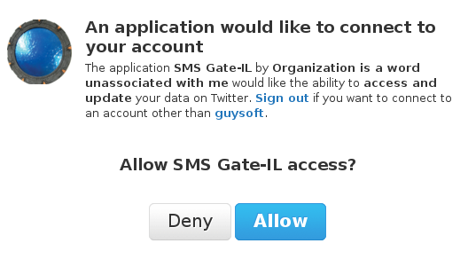
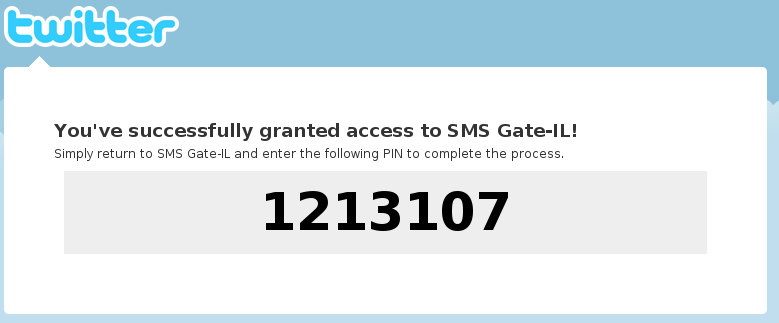

Free Israeli SMS to Twitter Gateway
Update your twitter status from your cellphone with SMS!
Sign up! It's free and secure.
Your phone number:
Go!
Operator number: 052-563-5053
How does it work?
Enter your phone number in the box above (For example 0512345678)
Make sure you are logged in to twitter, you will be redirected to a page asking you to allow Gate-IL to work 
You will receive from twitter a pin number. SMS That pin number twitter gives you to
052-563-5053
(+97252-563-5053) 
Thats it!
To tweet, SMS send a message from now to 052-563-5053. Cost is of a normal SMS message!
Tweet
Written and maintained by
YOU USER HERE
.